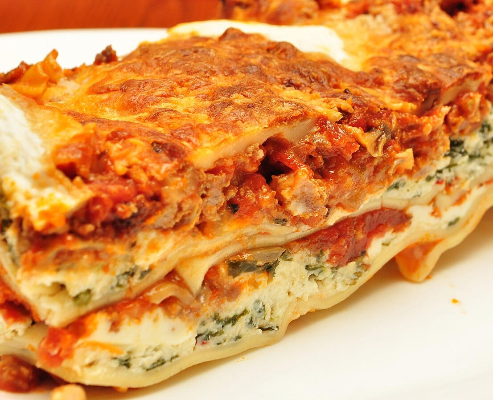

Home
Lasagna

Image source:
Wikimedia
Description
Lasagna is a type of pasta dish made with layers of flat pasta, meat
sauce, cheese, and béchamel sauce. It is baked in the oven until golden
and bubbly.
Ingredients
- 12 lasagna noodles
- 1 pound ground beef
- 2 cups ricotta cheese
- 2 cups shredded mozzarella cheese
- 1 cup grated Parmesan cheese
- 2 cups marinara sauce
- 1 egg
- 1 teaspoon dried oregano
- Salt and pepper to taste
- Olive oil for cooking
Steps
- Preheat oven to 375°F (190°C).
-
Cook lasagna noodles according to package instructions; drain and set
aside.
-
In a skillet, heat olive oil over medium heat. Add ground beef, season
with salt and pepper, and cook until browned.
-
In a bowl, mix ricotta cheese, egg, oregano, and a pinch of salt and
pepper.
- Spread a layer of marinara sauce on the bottom of a baking dish.
-
Layer 4 lasagna noodles over the sauce, then spread half of the ricotta
mixture over the noodles.
-
Add half of the ground beef, followed by a layer of mozzarella cheese.
-
Repeat layers: sauce, noodles, ricotta mixture, ground beef, mozzarella
cheese.
-
Finish with a final layer of noodles topped with marinara sauce and
remaining mozzarella and Parmesan cheese.
-
Bake in the preheated oven for 30-35 minutes or until cheese is melted
and bubbly.
- Let it cool for a few minutes before serving.
{kind=link}